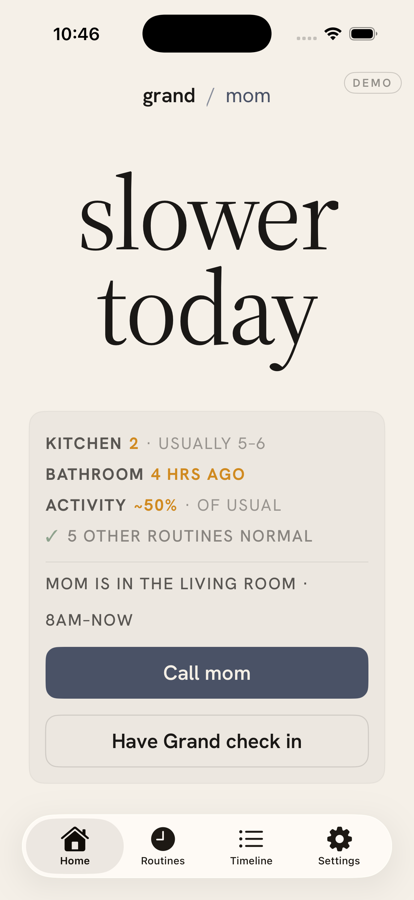
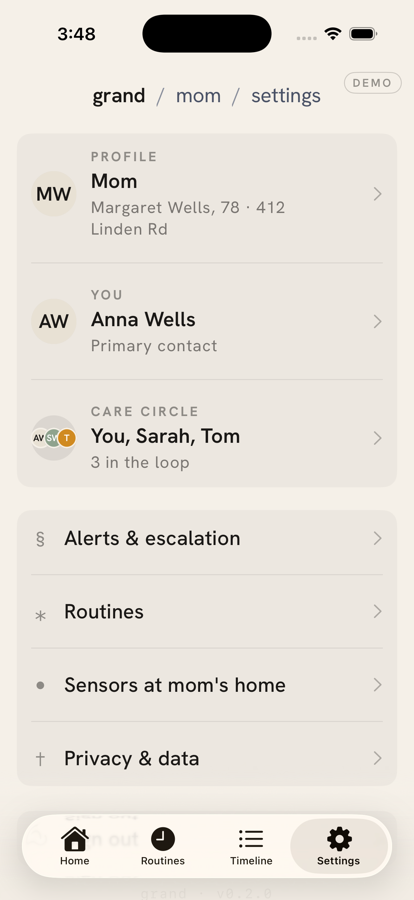

Pendants & watches
Only work if they’re charged and worn consistently — which means not in the shower, not overnight, not on the bad days.
Care at home
A small hub and a few discreet sensors to flag when something’s off — no cameras, no wearables, nothing to charge.
The worry
Your parent lives on their own, and they intend to keep it that way. But you can’t help but worry that something might happen and you can’t be there every day.
Pendants & watches
Only work if they’re charged and worn consistently — which means not in the shower, not overnight, not on the bad days.
Call-for-help buttons
Not only do they make your loved one feel old, they’re useless if they can’t be reached.
Cameras
Watching your own parent in their home isn’t safety — it’s the end of their privacy. And you can’t monitor a feed constantly.
There’s a better way to know they’re okay — one that stays out of the way, and lets them keep their independence.
How Grand works
The sensors
A few small sensors that plug into any outlet and connect to the hub over Wi‑Fi. They use motion and audio detection to make sure your loved one is safe and healthy.
The hub
Processes the data the sensors send and pings you if something is off. No audio is ever sent to the cloud, so your parent won’t feel like their privacy is being compromised.
What Grand pays attention to
Grand quietly builds a picture of your parent’s normal routine, then watches for the changes worth a check‑in. No live view into the home, no constant updates — just the signals that matter.
Whether there’s normal movement around the home through the day, the way there usually is.
Signs that meals are happening — one of the first things families worry about.
The hub listens for someone calling out, so a hard moment doesn’t go unnoticed.
Caregiver experience
Open the app and you see today at a glance: is the day broadly normal, or is there something worth a check‑in? No raw data to decode, no live view into the home — just a clear read on how your parent is doing.
See at a glance whether the day broadly looks like your parent’s normal routine.
Unusual inactivity or a shift in the pattern is surfaced — without exposing a live view into the home.
The moments that matter are framed clearly and sent to you, tuned to avoid false alarms.
Your parent barely notices it’s there — no screens to learn, nothing to wear.


For the family who buy it
Activity
Meals
A simple summary, not a surveillance stream.
Urgent
Clear, filtered, and action-oriented.
Use cases
Trust close
Grand is not a replacement for family, carers, clinicians, or emergency services. It gives you thoughtful context about how your parent is doing — without cameras, live feeds, or audio leaving the home. Your parent keeps their privacy; you still get the reassurance.
Early access